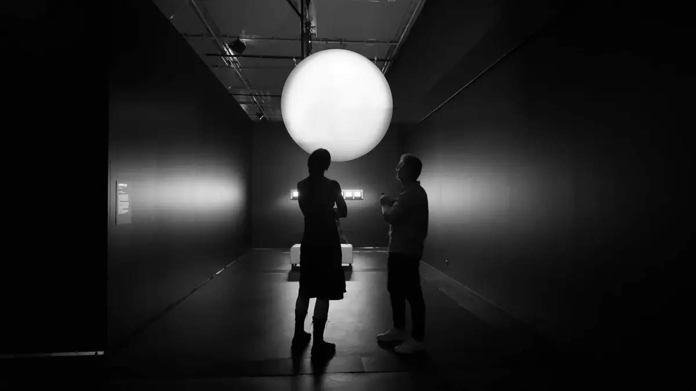
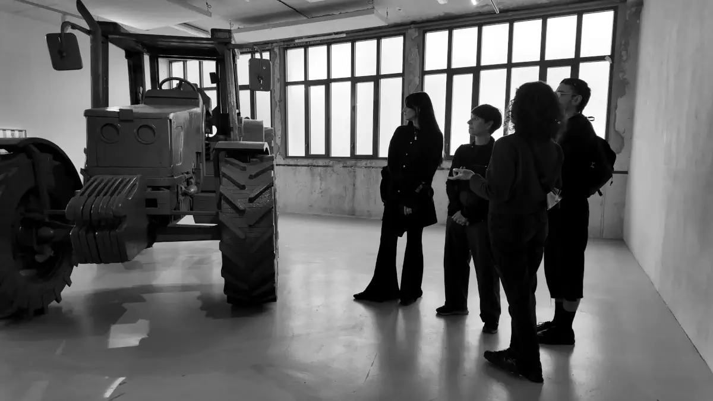

20.06.2026
From June 1st to 15th, the Rennes residency brought together the three Solar Futures artists and the Electroni[k] team for a programme focused on cultural mediation and audience engagement.
The residency began with project presentations and individual sessions with Electroni[k]’s mediation and distribution teams, exploring topics such as audience interaction, workshop design, touring requirements and dissemination strategies. The programme included hands-on workshops focused on the development and testing of mediation formats, as well as meetings with local artists and cultural professionals, including artist Paul Vivien at his studio. Participants also visited several cultural venues and exhibitions, including Emilie Brout and Maxime Marion’s s3lf.tech at 40mcube, Elly Oldman’s La Planète d’Au-Dessus de la Terre at L’Aparté, Hors-sol at Les Ateliers du Vent, and Le Monde Invisible by Flavien Théry and Fred Murie at Les Champs Libres.
The residency concluded with a public testing phase during “Le Grand Déballage” at Les Halles en Commun, where the artists co-facilitated workshops and experimented with the mediation tools and participatory formats developed throughout the programme. Caro Schnurrer developed participatory workshops exploring embodied data, collective listening and shared soundscapes through heart-rate sensors and live sonic interactions. David Lazar invited participants to collectively govern a local AI system with limited resources, negotiating its rules and decision-making processes through a collaborative protocol. Jin Lee introduced audiences to triboelectric nanogenerators technology (TENG), guiding them through hands-on experiments to generate and harness energy from everyday materials. This final presentation allowed the artists to test their mediation formats in real conditions and gather feedback from audiences.

